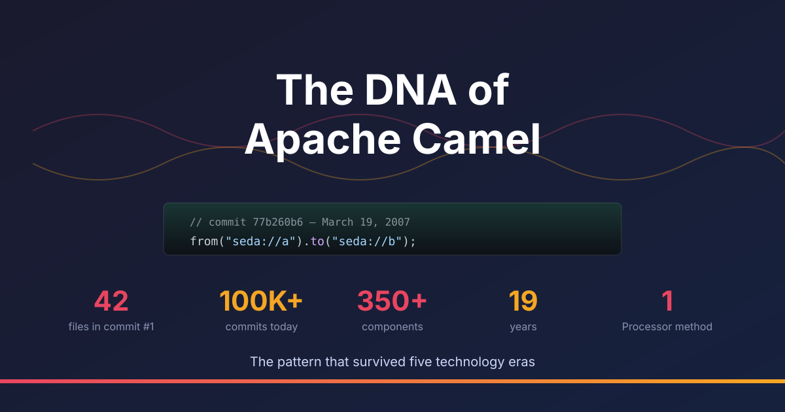

On March 19, 2007, at 10:54 UTC, James Strachan pushed commit 77b260b6 with the message “Initial checkin of Camel routing library.” It contained 42 files across two modules: camel-core and camel-jms.
Nineteen years later, the repository has crossed 100,000+ commits from 1,600+ contributors, ships 350+ integration components, and runs in production from CERN’s Large Hadron Collider to UPS processing tens of billions of messages per day.
Through all of that — through the rise and fall of ESBs, the SOA-to-microservices migration, the cloud-native revolution, Kubernetes, serverless, and now AI coding agents — the core DNA has remained remarkably stable. Let’s trace it through the source code.
The First Test Ever Written
The very first test in the very first commit:
// March 19, 2007 — commit 77b260b6
public void testSimpleRoute() throws Exception {
RouteBuilder builder = new RouteBuilder() {
public void configure() {
from("seda://a").to("seda://b");
}
};
}
That from().to() — the vertebral column of every Camel route ever written — was there from the very first commit. So was the content-based router:
// Also March 19, 2007 — same commit
public void testSimpleRouteWithChoice() throws Exception {
RouteBuilder builder = new RouteBuilder() {
public void configure() {
from("seda://a").choice()
.when(headerEquals("foo", "bar")).to("seda://b")
.when(headerEquals("foo", "cheese")).to("seda://c")
.otherwise().to("seda://d");
}
};
}
Nineteen years later, both of these still compile and run. That’s the DNA.
The Original Interfaces
The core abstractions were remarkably small. Here’s the entire Processor.java from that first commit:
public interface Processor<E> {
void onExchange(E exchange);
}
One method. That’s it.
The entire Exchange.java:
public interface Exchange<M> {
<T> T getHeader(String name);
void setHeader(String name, Object value);
Map<String,Object> getHeaders();
M getRequest();
M getResponse();
M getFault();
Exception getException();
void setException(Exception e);
}
Eight methods. Headers as a Map<String, Object>. Request/response/fault message pattern. Exception handling. Everything you need to carry a message through a processing pipeline, nothing you don’t.
And Endpoint.java:
public interface Endpoint<E> {
String getEndpointUri();
void send(E exchange);
E createExchange();
}
Three methods. An identity (the URI), a way to send, and a way to create an exchange.
Component.java was added 8.5 hours later with the commit message “Lets add a component interface.. we can flesh it out later.” It was an empty marker interface. There was no CamelContext yet (that came as CamelContainer), no Producer, no Consumer, no XML DSL. Just a Java fluent builder, an exchange, a processor, and endpoints.
What Survived, What Evolved
Today, almost two decades later, those interfaces have matured — but the shape is unmistakable:
| Concept | 2007 | 2026 |
|---|---|---|
| Processor | void onExchange(E exchange) | void process(Exchange exchange) — now @FunctionalInterface |
| Exchange | generic Exchange<M>, request/response/fault | non-generic, unified getMessage(), plus variables since 4.4 |
| Endpoint | had send() directly | factory for Producer/Consumer (split added weeks later) |
| Component | empty marker interface | factory of Endpoints, lifecycle, property configurers |
| Route DSL | from("seda://a").to("seda://b") | from("seda://a").to("seda://b") — identical |
The method name changed from onExchange to process. The generics were removed. The endpoint’s send() was factored into a dedicated Producer interface. But the fundamental shape — a processor receives an exchange, a route chains processors between endpoints — never changed.
Here’s Processor.java today:
@FunctionalInterface
public interface Processor {
void process(Exchange exchange) throws Exception;
}
Still one method. Now it’s a @FunctionalInterface, so you can write processors as lambdas. The DNA is the same; the language features caught up.
The Architecture in One Sentence
If you understand this sentence, you understand Camel:
A Route consumes messages from an Endpoint via a Consumer, wraps each message in an Exchange, passes it through a chain of Processors, and delivers it to one or more Endpoints via Producers.
Every component — whether it’s JMS (2007), Kafka (2014), or LangChain4j (2024) — plugs into this model by implementing an Endpoint that creates a Producer and/or Consumer. The 350+ components are 350+ implementations of the same three interfaces.
The Five Eras
Era 1: SOA and the ESB Age (2007–2011)
The world: ESBs ruled enterprise integration. ServiceMix, Mule, BizTalk. SOAP, WS-*, JBI. Everything was XML configuration and heavyweight application servers.
What Camel did: Offered a lightweight alternative. The Java DSL was a radical departure from XML-configured ESBs. JMS shipped in the first commit alongside camel-core. HTTP appeared 3 days later. ActiveMQ followed in May 2007.
The Enterprise Integration Patterns from Hohpe and Woolf’s book mapped perfectly to the Processor chain. Every pattern — splitter, aggregator, content-based router, wire tap — was just a Processor that manipulated an Exchange. The component model meant adding JBI, CXF, or SOAP support didn’t require touching the core.
Camel 1.0 shipped January 2009. Camel 2.0 followed just 7 months later in August 2009. The 2.x line would run for a decade — 26 minor releases.
Era 2: Cloud and Big Data (2011–2018)
The world: AWS, Hadoop, Kafka, microservices. The monolith-to-microservices migration. Docker. Spring Boot. REST APIs replacing SOAP.
Key arrivals:
- AWS components: 2011
- Kafka: February 2014
- Spring Boot: October 2014
- Kubernetes: September 2015
Camel kept the same from().to() DNA but extended the component catalog massively. A route that read from JMS and wrote to a file in 2007 looked structurally identical to a route reading from Kafka and writing to S3 in 2015:
// 2007 pattern
from("jms:orders").to("file:processed");
// 2015 pattern — same DNA
from("kafka:orders").to("aws2-s3:processed-bucket");
Spring Boot auto-configuration meant Camel could start in seconds instead of minutes inside an app server. But RouteBuilder.configure() was unchanged.
Era 3: Cloud-Native and Kubernetes (2018–2022)
The world: Kubernetes became the deployment platform. Quarkus and GraalVM promised instant startup. Serverless. Event-driven architectures.
The big architectural split — Camel 3.0 (November 2019):
The camel-core monolith was split into camel-api, camel-support, camel-core-model, camel-core-engine, and more. This was the most significant internal restructuring in the project’s history — but the public API barely changed. The from().to() pattern survived intact.
Key innovations of this era:
Endpoint DSL (June 2019) brought type-safe route building with IDE auto-completion:
from(kafka("orders").brokers("localhost:9092"))
.to(aws2S3("my-bucket"));
YAML DSL (February 2021) made routes declarative configuration:
- route:
from:
uri: kafka:orders
steps:
- to:
uri: aws2-s3:my-bucket
Both compile down to the same Route -> Processor chain -> Exchange flow. The YAML DSL is syntactic sugar over ProcessorDefinition and RouteDefinition — the same model classes that backed the Java DSL since 2007.
Era 4: Jakarta and the Modern Runtime (2023–2024)
Camel 4.0 (August 2023) made the javax.* to jakarta.* namespace migration and established Java 17 as the baseline. The getOut() method on Exchange, deprecated since 3.0, was finally guided toward getMessage(). Variables were added to the Exchange in 4.4, giving routes a scratchpad that survived across enrich() and pollEnrich() calls without header pollution.
Today’s Exchange still has the original methods from 2007 — just refined:
exchange.getMessage().getBody(); // was: exchange.getRequest()
exchange.getMessage().getHeader("foo"); // was: exchange.getHeader("foo")
exchange.getException(); // unchanged since commit #1
exchange.getVariable("myVar"); // since 4.4
Era 5: AI Agents and the Machine-Readable Framework (2024–present)
The world: LLMs, AI coding agents, MCP servers, agentic workflows. LangChain4j components arrived in March 2024.
Why the DNA matters now more than ever: AI agents read and write code. The from().to() pattern is one of the most learnable DSLs in existence — an AI agent can generate a Camel route with minimal context. The YAML DSL is structured data that machines parse trivially. The 350+ components are a catalog of pre-built integrations that an agent can compose without writing HTTP clients or SDK boilerplate.
The same pattern from commit 77b260b6:
from("seda://a").to("seda://b");
Today, an AI agent writes:
- route:
from:
uri: kafka:ai-requests
steps:
- to:
uri: langchain4j-chat:myModel
Different era. Same DNA.
Then and Now: Side by Side
Here is the content-based router from 2007 and its equivalent in every DSL available today:
2007 — Java DSL (the original)
from("seda://a").choice()
.when(headerEquals("foo", "bar")).to("seda://b")
.when(headerEquals("foo", "cheese")).to("seda://c")
.otherwise().to("seda://d");
2026 — Java DSL (modern)
from("direct:orders").choice()
.when(header("type").isEqualTo("priority")).to("kafka:priority-orders")
.when(header("type").isEqualTo("bulk")).to("kafka:bulk-orders")
.otherwise().to("kafka:standard-orders");
2026 — YAML DSL
- route:
from:
uri: direct:orders
steps:
- choice:
when:
- expression:
simple: "${header.type} == 'priority'"
steps:
- to:
uri: kafka:priority-orders
- expression:
simple: "${header.type} == 'bulk'"
steps:
- to:
uri: kafka:bulk-orders
otherwise:
steps:
- to:
uri: kafka:standard-orders
2026 — Endpoint DSL (type-safe)
from(direct("orders")).choice()
.when(header("type").isEqualTo("priority")).to(kafka("priority-orders"))
.when(header("type").isEqualTo("bulk")).to(kafka("bulk-orders"))
.otherwise().to(kafka("standard-orders"));
2026 — Lambda route builder (one-liner setup)
RouteBuilder.addRoutes(context, rb ->
rb.from("direct:orders").choice()
.when(header("type").isEqualTo("priority")).to("kafka:priority-orders")
.when(header("type").isEqualTo("bulk")).to("kafka:bulk-orders")
.otherwise().to("kafka:standard-orders"));
Four syntaxes. One DNA. The route is always a graph of processors connected by endpoints, with an exchange carrying the message through.
The Numbers
| Metric | Day 1 (2007) | Today (2026) |
|---|---|---|
| Files | 42 | 56,000+ |
| Components | 2 (SEDA, JMS) | 350+ |
| DSLs | Java only | Java, YAML, XML, Endpoint DSL |
| Core interfaces | 3 (Processor, Exchange, Endpoint) | Same 3, plus Producer, Consumer, Component |
| Processor methods | 1 | 1 |
| Contributors | 1 | 1,600+ |
| Commits | 1 | 100,000+ |
| Major versions | 0 | 4 (1.x through 4.x) |
Try the Original Route Today
The very first Camel example ever shipped — camel-example-jms-file from Camel 1.0 — consumed messages from a JMS queue and saved them to the file system. Back then it was 40+ lines of Java, an embedded ActiveMQ broker, manual ConnectionFactory wiring, and a Maven project.
Today, the same example is a single YAML file and one command:
camel run *
- route:
id: jms-to-file
description: "Camel 1.0 tribute: consume from JMS queue and save to file"
from:
uri: jms
parameters:
destinationName: test.queue
steps:
- log:
message: "Received: ${body}"
- to:
uri: file
parameters:
directoryName: test
No Maven project. No manual component wiring. No embedded broker — just camel infra run artemis to start one in a container. The route reads from jms:queue:test.queue and writes to file://test, exactly like the original.
Run the Camel 1.0 Tribute example →
Why It Lasted
Most frameworks from 2007 are gone. The ones that survived bet on the right abstraction level. Camel bet that integration is a graph of processors connected by endpoints, with an exchange carrying the message through — and that bet paid off across J2EE application servers, ESBs, Spring Boot microservices, Kubernetes operators, serverless functions, and now AI agents.
The from().to() pattern is Camel’s SELECT * FROM. It’s so fundamental that every technology era just provides new things to put inside the parentheses. The DNA doesn’t change. The components do.
Camel is approaching 20 years. Looking back through the git history, the most striking thing isn’t how much has changed — it’s how much hasn’t. The first test James Strachan wrote on that March morning in 2007 still reads like idiomatic Camel. That’s not an accident. That’s good architecture.